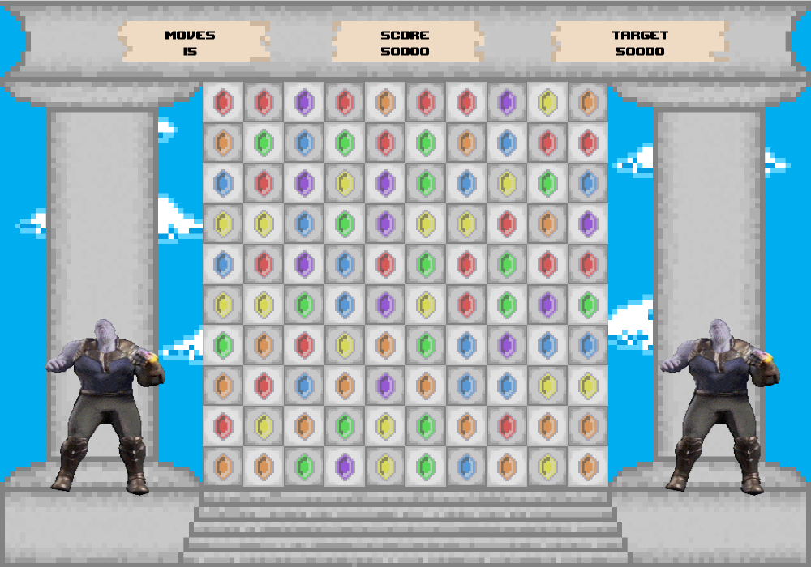

Bejeweled
Een P5.js applicatie dat werkt zoals het spel Bejeweled.
Give Back
Een java based web applicatie gemaakt voor het bedrijs ipsos. Waarmee collega's elkaar kudos kunnen geven voor hun gepresteerd werk.

Picross spel
Applicatie gemaakt in C# met MVVM patroon. Deze applicatie is nog steeds in ontwikkeling
MIDI-project
Applicatie gemaakt in C++. Deze applicatie zet midi bestanden om
Deze site
Website gemaakt met html in combinatie met css.
Kat en hond
Website met local database gemaakt in elixir met behulp van het framework phoenix.